26
EN BUSCA DE NUEVAS CONCEPCIONES
Final del siglo XIX
Aparentemente, la terminación del siglo XIX fue un período de gran prosperidad y hasta puede decirse que feliz. Pero artistas y escritores, considerándose ajenos a la situación (outsiders), se sentían paulatinamente más y más insatisfechos con los fines y procedimientos del arte que gustaba al público. La arquitectura ofreció el blanco más fácil para sus ataques, pues había evolucionado hasta convertirse en una rutina sin sentido. Recordemos cómo se levantaron grandes bloques de viviendas, fábricas y edificios públicos en las ciudades que se extendían vastamente, con una mezcolanza de estilos carentes de toda relación con la finalidad arquitectónica. A menudo parecía como si los ingenieros hubieran empezado por erigir una estructura para satisfacer las exigencias naturales del edificio, y después se le hubieran adherido unas migajas de Arte a la fachada en forma de adornos, tomados de un repertorio de patrones de los estilos históricos. Resulta extraño comprobar hasta qué punto la mayoría de los arquitectos se contentaron con este procedimiento. El público pedía esas columnas, pilastras, cornisas y molduras, y tales arquitectos se las proporcionaban. Pero hacia finales del siglo XIX, un número creciente de personas se dio cuenta de lo absurdo de esta costumbre. En Inglaterra, en particular, críticos y artistas se sintieron a disgusto con esta general decadencia del oficio ocasionada por la revolución industrial, irritándose a la sola vista de esas imitaciones en serie, estridentes y de pacotilla, de los adornos que en otro tiempo habían poseído nobleza y sentido por sí mismos. Críticos y artistas como John Ruskin y William Morris ambicionaron una completa reforma de las artes y los oficios, así como la sustitución de la producción en masa por el producto manual concienzudo y lleno de sentido. El influjo de sus censuras se difundió ampliamente, aun cuando el humilde trabajo manual por el que abogaban demostró ser, en las condiciones modernas, el mayor de los lujos. Su propaganda no podía seguramente llegar a abolir la producción industrial en masa, pero contribuyó a abrir los ojos de las gentes a los problemas que ésta creó y a desarrollar la afición por lo auténtico, sencillo y «hogareño».
Ruskin y Morris confiaron también en que la regeneración del arte podía obtenerse mediante un retorno a las condiciones medievales. Pero muchos artistas vieron que esto constituía un imposible. Ellos ansiaban un arte nuevo cimentado en una nueva concepción de los fines y posibilidades inherentes a cada materia. Esta bandera de un nuevo arte, o art nouveau, fue izada en la década de 1890. Los arquitectos tantearon nuevos tipos de adornos y de materiales. Los órdenes griegos se habían desarrollado a partir de primitivas estructuras de madera, proporcionando a partir del Renacimiento los materiales de la decoración arquitectónica. ¿No había llegado el momento en que la nueva arquitectura de acero y cristal, que se había desarrollado casi inadvertidamente en las estaciones de ferrocarril y en las construcciones industriales, pudiese crear un estilo ornamental propio? Y si la tradición occidental estaba demasiado aferrada a los antiguos sistemas de construcción, ¿no cabía ir a buscar en el arte de Lejano Oriente nuevos patrones e ideas?
Éste debió ser el razonamiento que guió los diseños del arquitecto belga Victor Horta (1861-1947), que había de lograr un triunfo inmediato. Horta aprendió del arte japonés a descartar la simetría, introduciendo las líneas curvas del arte oriental. Pero no fue un mero imitador, sino que trasladó estas líneas a las estructuras de acero, que tan bien se acomodaban a las exigencias modernas (ilustración 349). Por vez primera desde Brunelleschi, a los constructores europeos se les brindaba un estilo completamente nuevo. Y no debe extrañarnos que a tales innovaciones se las identificara con el art nouveau.
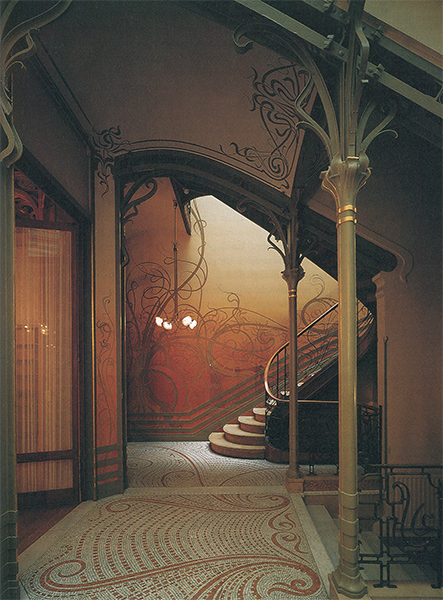
349 Victor Horta. Escalera, en el hotel Tassel, rue Paul-Émile Janson, Bruselas, 1893. Casa art nouveau.
Esta conciencia en cuanto al estilo y a la esperanza de que Japón podía ayudar a Europa a salir del atolladero no se limitó únicamente a la arquitectura; pero el sentimiento de incomodidad e insatisfacción respecto a las realizaciones del arte del siglo XIX, sentimiento que se apoderó de algunos pintores hacia el final de la época, es menos fácil de explicar. Ahora bien, importa que comprendamos sus raíces, porque de este sentimiento derivaron las diversas tendencias a las que ahora denominamos arte moderno. Algunos considerarán a los impresionistas los primeros modernos porque desafiaron ciertas normas de la pintura tal como eran enseñadas en las academias; pero conviene recordar que los impresionistas no se distinguieron en sus fines de las tradiciones del arte que se habían desarrollado desde el descubrimiento de la naturaleza en el Renacimiento. También ellos querían pintar la naturaleza tal como la veían, y su oposición a los maestros conservadores no radicó tanto en el fin como en los medios de conseguirlo. Su exploración de los reflejos del color, así como sus experiencias con la pincelada suelta, se encaminaban a crear una ilusión aún más perfecta de la impresión visual. Sólo con el impresionismo, en efecto, se completó la conquista de la naturaleza, convirtiéndose en tema del cuadro todo lo que pudiera presentarse ante los ojos del pintor, mereciendo constituir el objeto del estudio del artista el mundo real en todos sus aspectos. Acaso fue este triunfo total de sus métodos lo que hizo que algunos artistas titubearan en aceptarlos. Pareció, por un momento, como si todos los problemas de un arte que se proponía imitar las impresiones visuales hubieran sido resueltos, y como si ya no pudiera obtenerse nada más avanzado por el mismo camino.
Pero sabemos que, en arte, basta con que un problema haya sido resuelto para que otros nuevos aparezcan en su lugar. Quizá el primero que tuvo clara conciencia de la índole de estos problemas fue un artista que perteneció a la misma generación de los maestros impresionistas. Fue Paul Cézanne (1839-1906), dos años mayor que Renoir y tan sólo siete más joven que Manet. En su juventud, Cézanne tomó parte en las exposiciones impresionistas, pero quedó tan decepcionado por la acogida que se les brindó que se retiró a su ciudad natal de Aix-en-Provence, donde se dedicó a estudiar los problemas de su arte libre de las invectivas de los críticos. Fue hombre de costumbres ordenadas que disfrutó de independencia económica, sin verse forzado a buscar compradores para sus obras. Así, pudo consagrar toda su vida a resolver los problemas artísticos que se planteó y aplicar los criterios más exigentes a sus propias obras. Exteriormente vivió con apacibilidad y holgura, pero estuvo constantemente entregado a una lucha apasionada para conseguir en sus cuadros el ideal de perfección artística que se esforzó en perseguir. No fue amigo de las conversaciones teóricas, pero cuando empezó a aumentar su fama entre sus admiradores, trató algunas veces de explicarles en unas cuantas palabras lo que se proponía. Una de estas observaciones famosas fue que quería «rehacer a Poussin del natural». Lo que quiso decir fue que los viejos maestros clásicos como Poussin consiguieron un equilibrio y una perfección prodigiosos en su obra. Un cuadro como Et in Arcadia ego de Poussin (ilustración 254) ofrece un esquema maravillosamente armónico, en el que cada forma parece responder a otra. Advertimos que todo está en su sitio y que nada es circunstancial o impreciso. Cada forma se destaca claramente y puede apreciarse que pertenece a un cuerpo sólido y firme. El conjunto posee una simplicidad natural que se muestra serena y apacible. Cézanne perseguía un arte que poseyera algo de esta gravedad y serenidad; pero no creyó que se lo pudiera lograr imitando simplemente a Poussin. Los viejos maestros, a fin de cuentas, habían tenido que pagar un precio para lograr su equilibrio y solidez: no pudieron respetar la naturaleza tal como la vieron. Sus cuadros vienen a ser composiciones de las formas que habían aprendido estudiando la antigüedad clásica; incluso en cuanto a la sensación de espacio y de solidez, la consiguieron más de conformidad con las reglas fijas que habían aprendido a aplicar que contemplando de un modo nuevo cada objeto. Cézanne estuvo de acuerdo con sus amigos impresionistas en que esos procedimientos del arte académico eran contrarios a la naturaleza. Admiró los nuevos descubrimientos en el terreno del color y el modelado. También él quiso abandonarse a sus sensaciones, pintar las formas y los colores tal cual los veía y no como sabía que aproximadamente existían. Pero no se sintió satisfecho con la orientación que había tomado la pintura. Los impresionistas eran verdaderos maestros al pintar la naturaleza. Pero ¿era esto bastante en realidad? ¿Dónde estaba aquel esfuerzo por conseguir una composición armónica, la sólida simplicidad y el equilibrio perfecto que había caracterizado a los grandes maestros del pasado? La tarea consistía en pintar del natural, hacer uso de los descubrimientos de los maestros impresionistas y, sin embargo, recuperar el sentido de orden y de necesidad que había distinguido al arte de Poussin.
En sí, el problema no era nuevo para el arte. Recordemos que la conquista de la naturaleza y la invención de la perspectiva en el Quattrocento había perjudicado a las nítidas composiciones de las pinturas medievales, creando un problema que sólo la generación de Rafael fue capaz de resolver. Ahora, la misma cuestión se repetía en un plano distinto. La disolución de los contornos precisos en fluctuaciones de la luz, así como el descubrimiento de las sombras coloreadas de los impresionistas, planteaban un nuevo problema: ¿cómo podían mantenerse estas conquistas sin que condujeran a una pérdida de claridad y orden? Para decirlo en un lenguaje más sencillo: los cuadros impresionistas tendían a ser brillantes, pero confusos. Cézanne aborrecía la confusión. Sin embargo, no quiso volver a los convencionalismos académicos de dibujo y sombreado para crear la sensación de solidez más de lo que deseó volver a los paisajes compuestos para lograr resultados armónicos. Al reflexionar sobre el empleo adecuado del color, tuvo que enfrentarse con una decisión aún más urgente. Cézanne ambicionaba tanto los colores fuertes e intensos como los esquemas diáfanos. Recordemos que los artistas medievales fueron capaces de satisfacer este mismo deseo porque no se vieron obligados a respetar la verdadera apariencia de las cosas. Al retornar el arte a la observación de la naturaleza, los colores puros y brillantes de las vidrieras o los libros iluminados medievales habían dado paso a aquellas suaves combinaciones de tonos con las que los más grandes pintores venecianos y holandeses se habían esforzado en sugerir la luz y la atmósfera. Los impresionistas habían abandonado el procedimiento de mezclar los colores sobre la paleta, aplicando éstos separadamente sobre el lienzo en pequeños toques y pinceladas para expresar los fluctuantes reflejos de las escenas à plein air. Sus cuadros fueron de tonalidades mucho más brillantes que los de sus predecesores, pero el resultado no satisfacía del todo a Cézanne. Quería captar las tonalidades opulentas y plenas que ostenta la naturaleza bajo los cielos meridionales, pero consideró que un simple retorno a la pintura de grandes espacios en colores primarios puros perjudicaría la ilusión de realidad. Los cuadros pintados de este modo parecen esquemas planos y no aciertan a dar la sensación de profundidad. Por eso Cézanne parecía estar lleno de contradicciones. Su deseo de ser totalmente fiel a sus impresiones sensibles frente a la naturaleza pareció chocar con su ambición de «convertir —como dijo— al impresionismo en algo más sólido y duradero, como el arte de los museos». No es de extrañar que a menudo estuviera a punto de desesperarse, que permaneciera esclavizado frente a sus lienzos sin dejar nunca de realizar experiencias. Lo verdaderamente extraño es que triunfase, que lograra lo en apariencia imposible en sus cuadros. Si el arte fuera una cuestión de cálculos, no lo habría conseguido; pero, naturalmente, no lo es. Ese equilibrio o armonía en torno a los cuales se atormentaron tanto los artistas no tenía nada que ver con el equilibrio de las máquinas. «Se produce» de pronto y nadie sabe en absoluto cómo ni por qué. Mucho se ha escrito acerca del secreto del arte de Cézanne; se han sugerido explicaciones de todas suertes acerca de lo que se propuso y lo que consiguió. Pero estas explicaciones siguen siendo incompletas; incluso a veces parecen contradecirse a sí mismas. Mas si llegamos a impacientarnos ante tales explicaciones, siempre estarán los cuadros para convencernos. Y el mejor consejo, ahora y siempre, es «ir y contemplar las obras en el original».
No obstante, incluso nuestras ilustraciones pueden traslucir algo de la magnitud del triunfo de Cézanne. El paisaje con la montaña Santa Victoria, en el sur de Francia (ilustración 350), está bañado en luz y sin embargo es firme y sólido. Ofrece un esquema preciso y no obstante da la sensación de una gran profundidad y de distancia. Existe un sentido de orden y de calma en la manera de señalar Cézanne la línea horizontal del viaducto y la carretera del centro, y las verticales de la casa en el primer término, pero en ningún sitio percibimos que sea éste un ordenamiento que Cézanne haya impuesto a la naturaleza. Incluso sus pinceladas están colocadas de modo que caen dentro de las líneas principales del diseño y robustecen la sensación de una armonía natural.
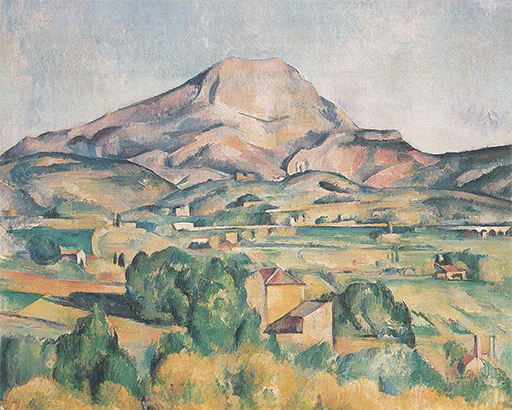
350 Paul Cézanne, La montaña Santa Victoria vista desde Bellevue, h. 1885. Óleo sobre lienzo, 73 x 92 cm; Fundación Barnes, Merion, Pensilvania.
El modo de alterar Cézanne la dirección de sus pinceladas sin recurrir nunca a los contornos dibujados puede observarse también en la ilustración 351, que muestra cuán deliberadamente contrarrestó el artista el efecto de un esquema plano, que podía haberse producido en la mitad superior, acentuando las formas tangibles de las rocas del primer término.
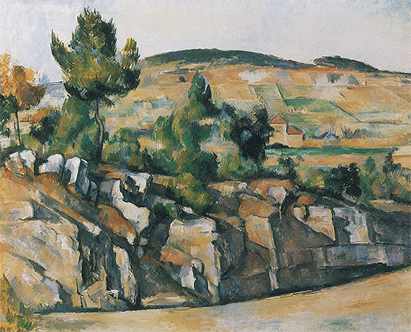
351 Paul Cézanne, Montañas en Provenza, 1886-1890. Óleo sobre lienzo, 63,5 x 79,4 cm; National Gallery, Londres.
Su maravilloso retrato de su mujer (ilustración 352) muestra hasta qué punto la concentración de Cézanne en las formas sencillas y recortadas contribuye a la sensación de equilibrio y tranquilidad. Comparadas con tales obras maestras apacibles, las de los impresionistas, como el retrato de Monet por Manet (ilustración 337), con frecuencia parecen meras improvisaciones ingeniosas.
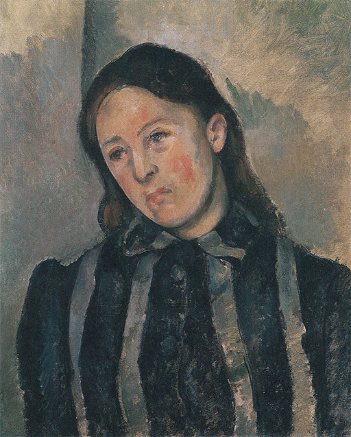
352 Paul Cézanne, La señora Cézanne, 1883-1887. Óleo sobre lienzo, 62 x 51 cm; Museo de Arte de Filadelfia.
Por supuesto que existen cuadros de Cézanne que no son tan fáciles de comprender. En una reproducción, una naturaleza muerta como la de la ilustración 353 no parece prometer mucho. ¡Qué desmañada parece si comparamos con ella la firmeza en el tratamiento de un tema análogo por Kalf, el maestro holandés del siglo XVII! (ilustración 280). El frutero está tan torpemente diseñado que ni siquiera su pie queda centrado. La mesa no sólo se inclina de izquierda a derecha sino que también parece como si estuviera desnivelada hacia adelante. Donde el maestro holandés sobresalió plasmando superficies blandas y suaves, Cézanne nos da un retazo de color que hace que la servilleta parezca estar hecha de hojalata. Poco ha de extrañar, pues, que los cuadros de Cézanne fueran escarnecidos como lamentables mamarrachos. Pero no hay que ir lejos a buscar la razón de esta aparente torpeza. Cézanne dejó de dar por admitidos los procedimientos tradicionales de la pintura, decidiendo comenzar como si antes de él no se hubiera pintado cuadro alguno. El maestro holandés pintó su naturaleza muerta para desplegar su extraordinario virtuosismo. Cézanne escogió sus temas para estudiar algunos problemas específicos que deseaba resolver. Sabemos que estuvo fascinado por la relación entre el colorido y el modelado. Un volumen sólido de tan brillante coloración como una manzana constituía un tema ideal para analizar este problema. Sabemos que estuvo interesado en conseguir un diseño equilibrado. Por eso estiró el tazón del frutero hacia la izquierda como para rellenar un vacío. Puesto que deseó estudiar todas las formas colocadas sobre la mesa en sus relaciones entre sí, inclinó sencillamente ésta hacia abajo para hacer que se vieran aquéllas. Tal vez este ejemplo demuestre por qué Cézanne se convirtió en el padre del arte moderno, pues, en su tremendo esfuerzo por conseguir un sentido de profundidad sin sacrificar la brillantez de los colores, por lograr una composición ordenada sin sacrificar aquel sentido de profundidad, en todos estos forcejeos y tanteos había algo que sí estaba dispuesto a sacrificar si era necesario: la corrección convencional del trazado. Él no iba a tergiversar la naturaleza; pero no le importaría demasiado que ésta quedase contrariada en algún pequeño detalle, siempre que éste le ayudara a obtener el efecto deseado. El invento de la perspectiva lineal, de Brunelleschi, no le interesó demasiado: lo dejó a un lado cuando consideró que le estorbaba para su obra. Después de todo, esta perspectiva científica había sido inventada para ayudar a los pintores a crear la ilusión de espacio, como hizo Masaccio en su fresco de Santa Maria Novella (ilustración 149). Cézanne no se propuso crear una ilusión, lo que quiso fue más bien transmitir el sentido de solidez y de volumen, y advirtió que podía hacerlo sin un dibujo convencional. Apenas se daría cuenta de que este ejemplo de indiferencia respecto al «dibujo correcto» sería el punto de partida de un derrumbamiento en el arte.
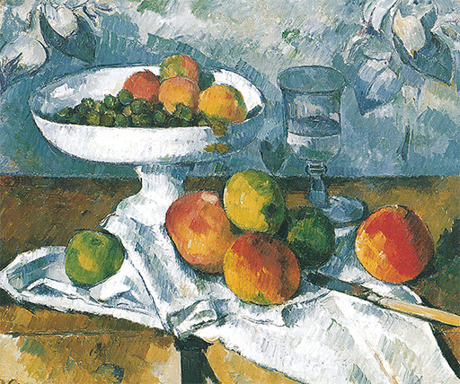
353 Paul Cézanne, Naturaleza muerta, h. 1879-1882. Óleo sobre lienzo, 46 x 55 cm; colección particular.
Mientras Cézanne tanteaba una conciliación entre los métodos del impresionismo y la necesidad de orden, un artista mucho más joven, Georges Seurat (1859-1891), comenzó a enfrentarse con este problema casi como si se tratase de una ecuación matemática. Empleando los métodos pictóricos impresionistas como punto de partida, estudió la teoría científica de la visión cromática y decidió construir sus cuadros por medio de minúsculos toques uniformes de colores puros, como en un mosaico. Confiaba en que, con ello, los colores se mezclarían en la retina (o mejor, en la mente) sin que perdiesen nada de su intensidad y luminosidad. Pero esta técnica tan radical, conocida con el nombre de puntillismo, ponía en peligro la legibilidad de sus cuadros, ya que con ella se prescindía de los contornos y se fragmentaban las formas en zonas de puntos multicolores. Seurat se vio obligado, así, a compensar la complejidad de su técnica pictórica con una simplificación de las formas, más radical aún que la intentada por el propio Cézanne (ilustración 354). Hay algo casi egipcio en el modo de acentuar Seurat las líneas verticales y horizontales, con lo que se apartaría cada vez más de la fiel reproducción de las formas naturales y se encaminaría más decididamente a la exploración de interesantes y expresivos esquemas.
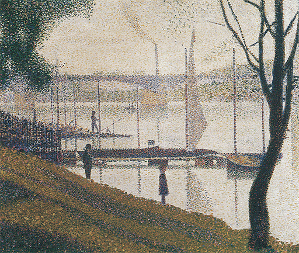
354 Georges Seurat, El puente de Courbevoie, 1886-1887. Óleo sobre lienzo, 46,4 x 55,3 cm; Galerías del Instituto Courtauld, Londres.
En el invierno de 1888, mientras Seurat llamaba la atención en París y Cézanne trabajaba en su retiro de Aix-en-Provence, un joven y apasionado holandés abandonó París en busca de la intensa luz y de los colores del mediodía de Francia: se trataba de Vincent van Gogh. Nacido en Holanda, en 1853, hijo de un vicario, fue un hombre profundamente religioso, que durante su juventud había actuado como predicador laico en Inglaterra y entre los mineros belgas. Quedó profundamente impresionado por el arte de Millet y por su mensaje social, decidiendo hacerse pintor. Un hermano suyo, más joven que él, Theo, que trabajaba en una tienda de arte, le puso en relación con los pintores impresionistas. Este hermano fue un hombre notable; aunque era pobre, siempre ayudó monetariamente a su hermano Vincent, e incluso le pagó los gastos de su viaje y estancia en Arlés, en el sur de Francia. Van Gogh confió en que si podía trabajar allí sin ser distraído, durante algunos años, conseguiría llegar a vender sus cuadros algún día y recompensar a su generoso hermano Theo. Desde la soledad por él escogida de Arlés, Van Gogh confió en sus Cartas a Theo, que pueden leerse como un diario ininterrumpido, todas sus ideas y esperanzas. Estas cartas, escritas por un hombre humilde, un artista casi autodidacta, que no tenía idea de la fama que iba a alcanzar, figuran entre las más emocionantes y sugestivas de toda la literatura. En ellas podemos percibir el sentido de misión del artista, sus luchas y sus triunfos, su desesperada soledad y su anhelo de camaradería, así como llegar a darnos cuenta del inmenso esfuerzo que desarolló trabajando con febril energía. Transcurrido menos de un año, en diciembre de 1888, tuvo un ataque de locura. En mayo de 1889 se recluyó en un asilo de enfermos mentales, pero aún tuvo intervalos de lucidez en los cuales siguió pintando. La agonía se prolongó durante catorce meses más. En julio de 1890 Van Gogh puso fin a su vida. Murió tan joven como Rafael, a los treinta y siete años de edad; su carrera de pintor no había durado más de diez años, y todos los cuadros sobre los que descansa su fama fueron pintados durante tres años interrumpidos por crisis mentales y espirituales. Hoy, todo el mundo conoce algunos de estos cuadros: Los girasoles, El sillón de Gauguin, Carretera con cipreses, y algunos de los retratos que pintó se harían populares a través de reproducciones en color, pudiendo encontrárselos en muchas habitaciones modestas. Esto fue exactamente lo que Van Gogh deseó: que sus cuadros poseyeran los efectos vigorosos y directos de las estampas coloreadas japonesas que tanto admiró. Ambicionó un arte sin adulteraciones, que llegara no solamente al rico coleccionista sino a cualquier ser humano para proporcionarle placer y consuelo. Pero esto no es todo. Ninguna reproducción es perfecta; las de poco precio vuelven más rudos los cuadros de Van Gogh de lo que son en realidad, y a veces nos cansan. En este caso, será una revelación volver a los originales y descubrir cuán sutiles y premeditados pueden ser incluso sus efectos más pronunciados.
También Van Gogh había asimilado las lecciones del impresionismo y del puntillismo de Seurat. Gustó de la técnica de pintar con puntos y trazos de colores puros, pero en sus manos esta técnica se convirtió en algo muy diferente de lo que aquellos pintores de París se habían propuesto. Van Gogh empleó pinceladas aisladas no sólo para desmenuzar el color, sino también para expresar su propia agitación. En una de sus cartas escritas desde Arlés describe su estado de inspiración, cuando «las emociones son algo tan fuerte que se trabaja sin darse cuenta de ello… y las pinceladas adquieren una ilación y coherencia como las palabras en una oración o en una carta». La comparación no puede ser más clara. En tales momentos, él pintó como otros escriben. Así como en la forma de escribir una carta los rasgos de la pluma sobre el papel comunican algo de los ademanes del que la escribe, y así como instintivamente nos damos cuenta de cuándo una carta ha sido escrita bajo los impulsos de una gran emoción, así también las pinceladas de Van Gogh nos comunican algo de su estado de espíritu. Antes que él, ningún artista había utilizado estos medios con tal coherencia y vigor. Recordemos que existen pinceladas sueltas y atrevidas en cuadros anteriores, en obras de Tintoretto (ilustración 237), de Frans Hals (ilustración 270) y de Manet (ilustración 337); pero en éstos, ellas revelan más bien la soberana maestría del artista, su rápida percepción y su mágica capacidad para evocarnos lo que vieron. En Van Gogh ayudan a transferir la exaltación del espíritu creador. A Van Gogh le gustó pintar objetos y escenas que ofrecieran amplio campo de acción a estos nuevos recursos, temas en los que podía dibujar lo mismo que pintar con su pincel y cargar el acento sobre el color, de la misma manera que un escritor subraya sus palabras. Por eso fue el primer pintor en descubrir la belleza de los rastrojos, los setos y los sembrados, las retorcidas ramas de los olivos y las formas oscuras y flamígeras de los cipreses (ilustración 355).
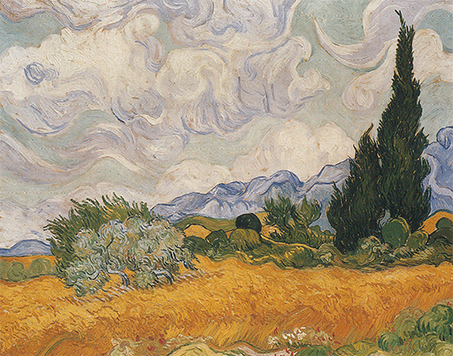
355 Vincent van Gogh, Campo de trigo con cipreses, 1889. Óleo sobre lienzo, 72,1 x 90,9 cm; National Gallery, Londres.
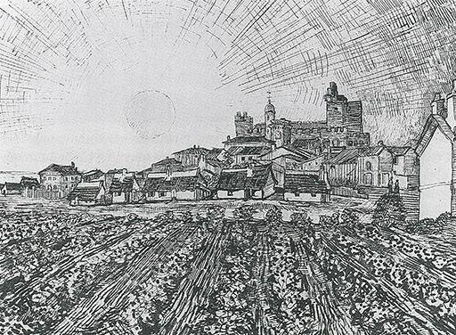
356 Vincent van Gogh, Vista de Les Saintes-Maries-de-la-Mer, 1888. Pluma de ave y tinta china sobre papel, 43,5 x 60 cm; colección Oskar Reinhart, Winterthur.
Van Gogh experimentó tal frenesí de creación que se sintió impulsado no sólo a representar el mismísimo sol radiante (ilustración 356), sino también las cosas humildes, apacibles y cotidianas, que nadie había considerado que merecieran la atención del artista. Pintó su reducida habitación en Arlés (ilustración 357), y lo que acerca de este cuadro escribió a su hermano explica maravillosamente los propósitos del artista:
Tengo una nueva idea en la cabeza y aquí está el boceto…: esta vez se trata sencillamente de mi dormitorio; aquí sólo debe operar el color, y, dándole un mayor estilo a las cosas por su simplificación, ha de sugerir el reposo o el sueño en general. En una palabra, al contemplarse el cuadro debe descansar el pensamiento, o mejor aún, la imaginación.
Las paredes son de violeta pálido. El suelo, de tablas rojas. La madera de la cama y las sillas son de amarillo de manteca tierna; las sábanas y la almohada, de limón verdoso. El cubrecama, de rojo escarlata. La ventana, verde. La mesa de aseo, naranja. La jofaina, azul. Las puertas, lila.
Y esto es todo; no hay nada en esta habitación con los cerrojos echados. Las amplias líneas de los muebles deben expresar también un reposo inviolable. Retratos en las paredes, y un espejo y un perchero con algunas ropas.
El marco, puesto que no hay blanco en el cuadro, será de este color. Estoy obligado a recurrir a él a modo de desquite del forzado reposo.
Trabajaré en él, además, todo el día, pero verás cuán sencilla es la concepción. Las sombras quedan suprimidas; está pintado en capas planas y libres como las estampas japonesas…
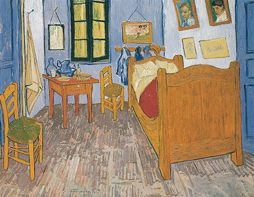
357 Vincent van Gogh, La habitación de Vincent en Arlés, 1889. Óleo sobre lienzo, 57,5 x 74 cm; Museo de Orsay, París.
Es evidente que Van Gogh no se proponía principalmente una correcta representación. Empleó formas y colores para expresar lo que sentía acerca de las cosas que pintó y para que otros experimentaran lo mismo que él. No se preocupó mucho de lo que llamaba «la realidad estereoscópica», esto es, la reproducción fotográficamente exacta de la naturaleza. Exageraría e incluso acentuaría la apariencia de las cosas si esto conviniese a sus fines. Así llegó, por diferente camino, a una coyuntura similar a la que encontró Cézanne durante esos mismos años. Pero tomó la trascendental decisión de abandonar deliberadamente los fines que hacían de la pintura una imitación de la naturaleza. Sus razones, claro está, eran diferentes. Cuando Cézanne pintaba una naturaleza muerta, quería explorar las relaciones entre formas y colores, y tan sólo utilizó la «perspectiva correcta» cuando la necesitó para su experiencia particular. Van Gogh quiso que su obra expresara lo que sentía, y si la tergiversación le ayudaba a conseguir este propósito, haría uso de ella. Uno y otro llegaron a este punto sin proponerse derribar el viejo concepto de arte; no adoptaron actitudes de revolucionarios, ni buscaron abrumar a los críticos complacientes. Tanto uno como otro, en efecto, casi renunciaron a la esperanza de que alguien prestara atención a sus cuadros. Trabajaron de la manera que lo hicieron porque tenían que hacerlo así.
Algo en cierto modo distinto sucedió respecto a otro artista que también se encontraba en el sur de Francia en 1888: Paul Gauguin (1848-1903). Van Gogh experimentaba un gran deseo de camaradería; soñaba con una hermandad de artistas como la que los prerrafaelistas habían fundado en Inglaterra, y persuadió a Gauguin, que le llevaba cinco años, a que fuera a reunirse con él en Arlés. En tanto que hombre, Gauguin era muy diferente de Van Gogh; no tenía nada de su humildad y de su sentido de misión. Por el contrario, era orgulloso y ambicioso. Pero existieron algunos puntos de contacto entre ambos creadores. Al igual que Van Gogh, Gauguin había comenzado a pintar en edad relativamente tardía (antes había sido un empleado de banca acomodado) y fue, del mismo modo, casi un autodidacta. La camaradería de los dos, sin embargo, concluyó de manera desastrosa. Van Gogh, en un rapto de locura, atacó a Gauguin, quien marchó a París. Dos años más tarde, abandonó Europa encaminándose a una de las famosas islas de los mares del sur, Tahití, en busca de una vida sencilla, pues llegó a convencerse de que el arte estaba en peligro de volverse rutinario y superficial y de que toda la habilidad y todos los conocimientos que se habían ido acumulando en Europa habían privado a los hombres de lo más importante: la intensidad y la fuerza en el sentir y la manera espontánea de expresarlo.
Gauguin, naturalmente, no fue el primer artista que experimentó estos escrúpulos acerca de la civilización. Desde que los artistas se hicieron conscientes del estilo, se sintieron recelosos de los convencionalismos e insatisfechos del virtuosismo. Ambicionaban un arte que no consistiera en fórmulas que pudieran ser aprendidas, y un estilo que no fuera estilo simplemente, sino algo poderoso y fuerte como las pasiones humanas. Delacroix había ido a Argel en busca de colores más intensos y de formas de vida menos reprimidas. Los prerrafaelistas en Inglaterra confiaban en hallar esta espontaneidad y sencillez en el arte no contaminado de la edad de la fe. Los impresionistas admiraban a los japoneses, pero su creación era artificiosa comparada con la intensidad y simplicidad que Gauguin perseguía. Éste, en un principio, estudió el arte de los aldeanos, pero se cansó pronto. Se sintió impulsado a huir de Europa e irse a vivir entre los nativos de los mares del sur, como uno más entre los indígenas, en busca de su salvación. Las obras que trajo al regreso desconcertaron incluso a sus antiguos amigos, tan salvajes y primitivas parecían. Pero esto fue precisamente lo que Gauguin deseó. Se sentía orgulloso de que se le llamara bárbaro. Hasta su color y su dibujo serían «bárbaros» para hacer justicia a los no corrompidos hijos de la naturaleza que había llegado a admirar durante su permanencia en Tahití. Mirando hoy día uno de sus cuadros (ilustración 358) no conseguiremos hacernos cargo del todo de tal actitud. ¡Hemos llegado a acostumbrarnos tanto a mayores «salvajismos» en arte! Y con todo, no es difícil advertir que Gauguin señaló un nuevo camino. No solamente es extraño y exótico el tema de sus cuadros. Gauguin trató de penetrar en el espíritu de los nativos y observar las cosas tal como son. Estudió los procedimientos de los artesanos indígenas, y con frecuencia introdujo representaciones de sus obras en sus propios cuadros. Se esforzó en retratar a los nativos de acuerdo con este arte primitivo, simplificando los contornos de las formas y no eludiendo el empleo de grandes manchas, de fuertes colores. A diferencia de Cézanne, no se preocupó de si estas formas y esquemas de color simplificados hacían que el cuadro pareciese plano. De buen grado ignoró los seculares problemas del arte occidental cuando creyó que proceder así le ayudaba a expresar la intensidad ingenua de las criaturas de la naturaleza. No siempre consiguió triunfar en su propósito de lograr la espontaneidad y la sencillez; pero su anhelo de alcanzar tales cualidades fue tan apasionado y sincero como el de Cézanne de una nueva armonía, y el de Van Gogh por aportar un nuevo mensaje, pues también Gauguin sacrificó su vida a su ideal. Sintiéndose incomprendido en Europa, decidió regresar definitivamente a las islas de los mares del sur, y después de algunos años de soledad y descontento murió allí víctima de la enfermedad y las privaciones sufridas.
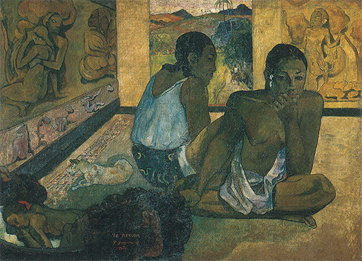
358 Paul Gauguin, Te Rerioa (El sueño), 1897. Óleo sobre lienzo, 95,1 x 130,2 cm; Galerías del Instituto Courtauld, Londres.
Cézanne, Van Gogh y Gauguin fueron tres desesperados solitarios que trabajaron con pocas esperanzas de ser comprendidos nunca. Pero los problemas de su arte, sentido tan intensamente por ellos, fueron advertidos por un número cada vez mayor de artistas de la generación más joven, que no se encontraban satisfechos con la técnica que habían adquirido en las escuelas de arte. Estos artistas aprendían ahora a representar la naturaleza, a dibujar correctamente y a manejar diestramente el color y los pinceles; habían asimilado las enseñanzas de la revolución impresionista y se adiestraban en expresar las modulaciones del aire y de la luz del sol. Algunos grandes artistas perseveraron en este camino e hiciéronse adalides de los nuevos métodos en países en los que la resistencia ante el impresionismo aún era fuerte, y eran ya muchos los pintores de la joven generación que buscaban nuevos métodos para resolver, o al menos evitar, las dificultades que Cézanne había puesto de manifiesto. Básicamente, estas dificultades provenían del choque (discutido anteriormente) entre la necesidad de la gradación tonal para sugerir profundidad y el deseo de conservar la belleza de los colores que vemos. El arte de los japoneses les convenció de que un cuadro podía causar una impresión más fuerte si se renunciaba al volumen y otros detalles en favor de una atrevida simplificación. Tanto Van Gogh como Gauguin habían avanzado algo por este camino, intensificando los colores y haciendo caso omiso de la sensación de profundidad, y Seurat aún había ido más lejos en sus experimentos con el puntillismo. Pierre Bonnard (1867-1947) mostró una habilidad y sensibilidad especiales a la hora de sugerir una sensación de luz y color oscilando en el lienzo como si fuera un tapiz. Su cuadro de una mesa puesta (ilustración 359) demuestra cómo evitaba poner el acento en la perspectiva y la profundidad para hacernos disfrutar de un esquema cromático.
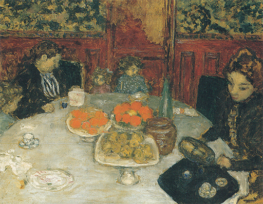
359 Pierre Bonnard, A la mesa, 1899. Óleo sobre tabla, 55 x 70 cm; colección de la Fundación E. G. Bührle, Zurich.
El pintor suizo Ferdinand Hodler (1853-1918) todavía simplificó más audazmente los paisajes de su tierra natal, para lograr que de este modo adquirieran la claridad propia de un cartel (ilustración 360).
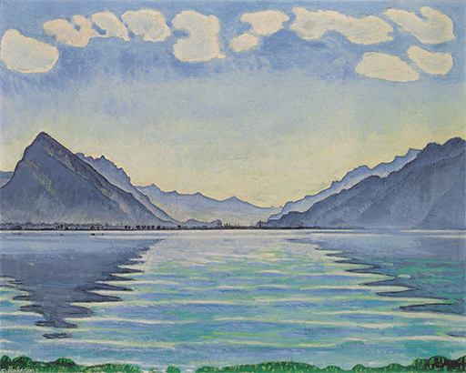
360 Ferdinand Hodler, El lago Thun, 1905. Óleo sobre lienzo, 80,2 x 100 cm; Museo de Arte y de Historia, Ginebra.
No es casualidad que este cuadro nos recuerde un cartel, ya que el estilo adoptado por los artistas europeos en seguimiento de los japoneses se amoldaba especialmente al que, a través de ellos, se había impuesto en las artes publicitarias de la época. Ya antes de que acabara el siglo, un dotadísimo discípulo de Degas, Henri de Toulouse-Lautrec (1864-1901), se valió de una simplicidad de medios parecida para el nuevo arte del cartel (ilustración 361).
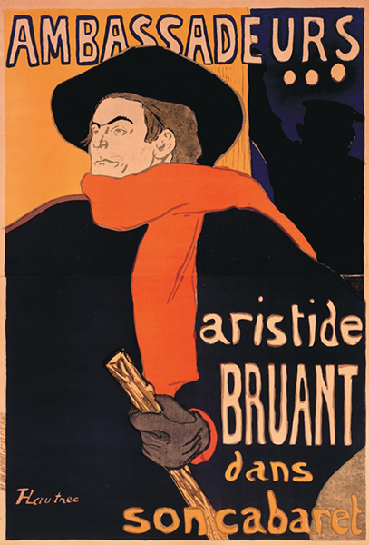
361 Henri de Toulouse-Lautrec, Les Ambassadeurs: Aristide Bruant, 1892. Cartel litográfico, 141,2 x 98,4 cm.
El arte de la ilustración también salió favorecido con el desarrollo de tales efectos. Recordando el amor y el cuidado que en épocas anteriores se habían dedicado a la edición de libros, hombres como William Morris no hubieran tolerado libros mal hechos o ilustraciones que se limitaran a contar una historia sin tener en cuenta el efecto que producían en la página impresa. Inspirado por Whistler y los japoneses, el joven prodigio Aubrey Beardsley (1872-1898) se elevó rápidamente a la fama con sus sofisticadas ilustraciones en blanco y negro (ilustración 362).
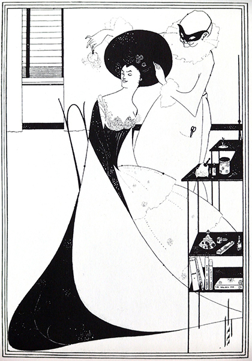
362 Aubrey Beardsley. Ilustración para Salomé, de Oscar Wilde, 1894. Clisé de línea y grabado de trama sobre pergamino japonés; 34,3 x 27,3 cm.
El término más usado como alabanza durante el período del art nouveau era «decorativo». Cuadros y grabados debían presentar unas formas agradables a la vista antes de que pudiéramos discernir qué representaban. Lenta pero irrevocablemente, esta moda por lo decorativo sentó las bases de una nueva orientación en el arte. La fidelidad para con el motivo o la narración de una historia conmovedora ya no era tan importante, siempre que el cuadro o el grabado produjeran un efecto agradable. Sin embargo, algunos artistas sentían que en el transcurso de toda esta búsqueda algo se había perdido en el arte; algo que ellos trataron desesperadamente de recuperar. Recordemos que Cézanne consideró que esa falla fue el sentido del orden y el equilibrio; que la preocupación de los impresionistas respecto a la fugacidad de cada momento les había hecho olvidar las formas solidas y permanentes de la naturaleza. Van Gogh notó que abandonándose a las impresiones visuales y no obedeciendo más que a las calidades ópticas de la luz y el color, el arte corría peligro de perder aquella pasión e intensidad que son las únicas por medio de las cuales el artista puede transmitir su sentimiento a sus semejantes. Gauguin, por último, se sintió descontento de la vida y del arte a la par, tal como los encontró, y ambicionó algo mucho más sencillo y directo, confiando en hallarlo entre los primitivos. Lo que nosotros denominamos arte moderno surgió de estos sentimientos de insatisfacción, y las diversas soluciones que persiguieron estos tres artistas se convirtieron en los ideales de tres movimientos del arte moderno. La solución de Cézanne condujo, finalmente, al cubismo surgido en Francia; la de Van Gogh, al expresionismo, que halló sus principales representantes en Alemania; y la de Gauguin, a las varias formas de primitivismo que han tenido lugar. Por «enloquecidos» que estos tres movimientos parecieran a primera vista, no resulta difícil demostrar que fueron intentos consecuentes para salir del punto muerto en que se hallaban los artistas.

Paul Gauguin, Van Gogh pintando girasoles, 1888. Óleo sobre lienzo, 73 x 92 cm; Rijksmuseum Vincent van Gogh, Amsterdam.